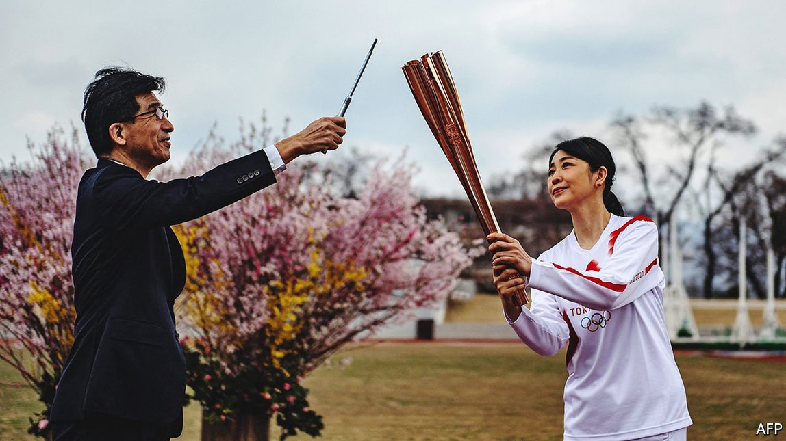

Text
2021-08-01T14:34:21+00:00
Burning clean
清洁燃料
清潔燃料
Japan Inc wants to become a hydrogen superpower
日本有志成为氢能超级大国
日本有志成為氫能超級大國
To succeed, it must focus on unglamorous industrial uses of the gas
若想成功，它必须主攻氢气朴素无华的工业用途
若想成功，它必須主攻氫氣樸素無華的工業用途

IN 2016 TOKYO’S then governor, Masuzoe Yoichi, predicted that the Olympics the Japanese capital was to host in 2020 would “leave a hydrogen society as its legacy”, just as the 1964 Tokyo games left the Shinkansen bullet trains. Later that year Mr Masuzoe resigned over an expenses scandal. But as Tokyo prepares for the pandemic-delayed opening ceremony on July 23rd his dream lives on.
二〇一六年，时任东京都知事舛添要一预言，2020年东京奥运会将“留给世人一个氢能社会”，就像1964年东京奥运会留下了新干线子弹列车那样。同年晚些时候，舛添要一因挪用政治资金的丑闻辞职。但因疫情推迟到7月23日在东京开幕的奥运会让他的氢能梦得以延续。
二〇一六年，時任東京都知事舛添要一預言，2020年東京奧運會將“留給世人一個氫能社會”，就像1964年東京奧運會留下了新幹線子彈列車那樣。同年晚些時候，舛添要一因挪用政治資金的醜聞辭職。但因疫情推遲到7月23日在東京開幕的奧運會讓他的氫能夢得以延續。
For the first time, the Olympic torch burned hydrogen (never mind that the flame is colourless). Officials are ferried around in some 500 cars and 100 buses made by Toyota and running on fuel cells, portable power plants that consume hydrogen and emit only water vapour. The Kawasaki King Skyfront Tokyu Rei hotel gets energy from hydrogen sourced from waste plastics.
这还是奥运圣火第一次用氢作燃料（别介意它的火焰是无色的）。丰田生产的500辆小汽车和100辆大巴负责接送官员，这些车使用燃料电池——一种消耗氢气且只排放水蒸气的便携发电站。川崎国王天际东急REI酒店利用从废塑料中获得的氢气来供能。
這還是奧運聖火第一次用氫作燃料（別介意它的火焰是無色的）。豐田生產的500輛小汽車和100輛大巴負責接送官員，這些車使用燃料電池——一種消耗氫氣且只排放水蒸氣的便攜發電站。川崎國王天際東急REI酒店利用從廢塑料中獲得的氫氣來供能。
All nifty, to be sure. But also as immaterial as the lightest gas. Fuel-cell cars are miles from the mass market, despite 20 years of efforts by Toyota and other Japanese firms. The lack of refuelling infrastructure, difficulty of storing the stuff in small vehicles and fuel cells’ persistently high cost all argue against a big role for hydrogen in decarbonising transport.
这些的确都很巧妙。但却也像氢气这种最轻的气体一样“无足轻重”。尽管丰田等日本企业努力了20年，但燃料电池汽车离大众市场仍然很远。燃料补给基础设施匮乏，小型车辆难以储存氢燃料，再加上燃料电池成本持续高企，都表明氢难以在交通脱碳中发挥重大作用。
這些的確都很巧妙。但卻也像氫氣這種最輕的氣體一樣“無足輕重”。儘管豐田等日本企業努力了20年，但燃料電池汽車離大眾市場仍然很遠。燃料補給基礎設施匱乏，小型車輛難以儲存氫燃料，再加上燃料電池成本持續高企，都表明氫難以在交通脫碳中發揮重大作用。
And yet Japan does have a shot at hydrogen-superpowerdom. Behind the scenes its firms are pursuing unglamorous applications in heavy industry and other hard-to-decarbonise sectors. The government is egging them on.
不过，日本确实有望成为氢能超级大国。日本企业正默默地在重工业和其他难以实现脱碳的行业部署不起眼的氢能应用。日本政府也在鼓励这种做法。
不過，日本確實有望成為氫能超級大國。日本企業正默默地在重工業和其他難以實現脫碳的行業部署不起眼的氫能應用。日本政府也在鼓勵這種做法。
In June, for example, Japan’s Ministry of Economy, Trade and Industry (METI) laid out a plan to slash carbon emissions from steelmaking by shifting to “direct-reduction iron” (DRI). This process both uses considerably less energy and can replace some climate-unfriendly ingredients of the requisite industrial chemistry (such as carbon monoxide). METI is lavishing billions of dollars on the industry to commercialise the use of hydrogen in blast furnaces by 2030. Mitsubishi Heavy Industries, a conglomerate, is building a zero-carbon steel mill in Austria. Nippon Steel wants its DRI technology to be in commercial use by 2030.
例如在6月，日本经济产业省制定了一项计划，通过改用“直接还原铁”（direct-reduction iron，以下简称DRI）来大幅削减炼钢的碳排放。这种工艺既大大减少了能耗，又能替代一部分对气候不友好的必需化工原料，如一氧化碳。经产省正向该行业大举注资数十亿美元，以求在2030年前实现氢能高炉的商业化。产业集团三菱重工正在奥地利建造一家零碳炼钢厂。日本制铁（Nippon Steel）希望其DRI技术在2030年前投入商用。
例如在6月，日本經濟產業省制定了一項計劃，通過改用“直接還原鐵”（direct-reduction iron，以下簡稱DRI）來大幅削減鍊鋼的碳排放。這種工藝既大大減少了能耗，又能替代一部分對氣候不友好的必需化工原料，如一氧化碳。經產省正向該行業大舉注資數十億美元，以求在2030年前實現氫能高爐的商業化。產業集團三菱重工正在奧地利建造一家零碳鍊鋼廠。日本制鐵（Nippon Steel）希望其DRI技術在2030年前投入商用。
Japanese firms are getting into the production of the feedstock, too. The easiest way to make hydrogen is to strip it from methane, each molecule of which contains four atoms of hydrogen and one of carbon. That process, known as “reforming”, is cheap but dirty, since its byproduct is planet-heating carbon. Hydrogen can be made cleanly from ammonia or water but this is more expensive. To bring costs down, ENEOS, Japan’s biggest oil refiner, recently unveiled plans to build a giant factory by 2030. It will use an electrolytic process to slash the cost of making clean H2 from H2O by two-thirds.
日本企业也开始投入到氢气生产中。最简单的制氢方法就是分解甲烷，每个甲烷分子由四个氢原子和一个碳原子构成。这一工艺流程叫作“重整”，虽然便宜，但不清洁，因为其副产品是导致全球变暖的碳。还可以从氨或水中获得氢，但成本要高得多。为了降低成本，日本最大的炼油企业引能仕（ENEOS）最近公布了在2030年前建造一座巨型工厂的计划。它将使用一种电解工艺，把从水中制造清洁氢气的成本削减三分之二。
日本企業也開始投入到氫氣生產中。最簡單的制氫方法就是分解甲烷，每個甲烷分子由四個氫原子和一個碳原子構成。這一工藝流程叫作“重整”，雖然便宜，但不清潔，因為其副產品是導致全球變暖的碳。還可以從氨或水中獲得氫，但成本要高得多。為了降低成本，日本最大的煉油企業引能仕（ENEOS）最近公布了在2030年前建造一座巨型工廠的計劃。它將使用一種電解工藝，把從水中製造清潔氫氣的成本削減三分之二。
In July Marubeni, a Japanese industrial conglomerate, struck a deal with Providence Asset Group, an Australian investment firm, to develop 30 solar farms down under that would combine renewable energy with battery and hydrogen storage. They aim eventually to export green hydrogen to Japan. Kawasaki Heavy Industries recently won regulatory approval to build the world’s largest liquefied-hydrogen cargo ship. Not quite as eye-catching as the Shinkansen. But, just maybe, even more consequential.
7月，日本产业集团丸红（Marubeni）与澳大利亚投资公司普罗维登斯资产集团（Providence Asset Group）达成协议，在澳洲建立30座太阳能发电厂，将可再生能源与电池和氢存储结合起来。它们最终的目标是向日本出口绿色氢。川崎重工（Kawasaki Heavy Industries）近期获监管批准建造世界上最大的液氢运输船。它虽没有新干线那样引人注目，但影响也许会更深远。
7月，日本產業集團丸紅（Marubeni）與澳大利亞投資公司普羅維登斯資產集團（Providence Asset Group）達成協議，在澳洲建立30座太陽能發電廠，將可再生能源與電池和氫存儲結合起來。它們最終的目標是向日本出口綠色氫。川崎重工（Kawasaki Heavy Industries）近期獲監管批准建造世界上最大的液氫運輸船。它雖沒有新幹線那樣引人注目，但影響也許會更深遠。